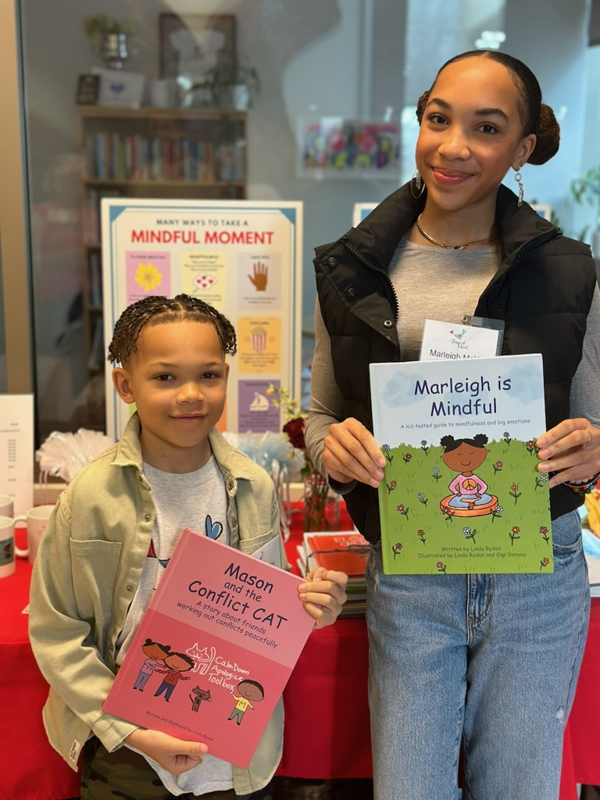
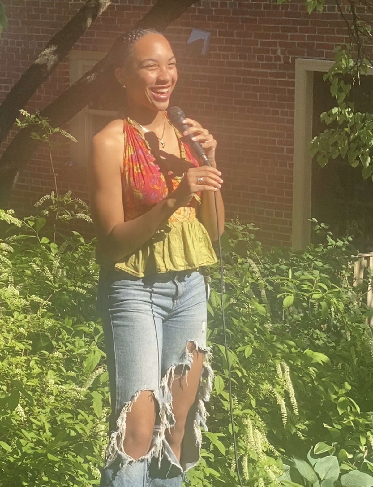
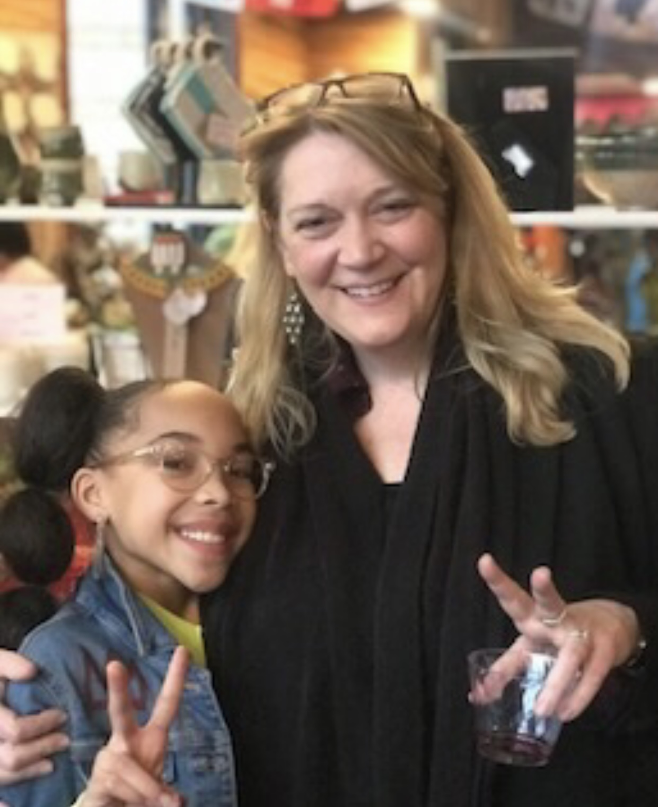

Psychology
The Mind Behind
the Movement.
It started in first grade, when my teacher Ms. Linda Ryden taught me how to understand what I was feeling and why. I still use Four Square Breathing backstage before performances, and I still journal when things feel uncertain.
Ms. Ryden was inspired to write Marleigh Is Mindful after seeing a photograph of me teaching Four Square Breathing to my dance sisters before a performance. A second book, Marleigh's Big Feelings, followed for preschool readers. When she brought me as a surprise guest to a school using the curriculum, I signed every book and talked with every child.
Dance made that curiosity personal. Performing means working through nerves and pressure in front of an audience, and I became fascinated by what is happening in the mind when the body is asked to do something extraordinary. That grew into a real interest in psychology. I co-founded my school's Psychology Club, where I design workshops on mental health and emotional awareness for my peers, and I plan to study psychology alongside dance in college. Someday, I want to earn my PhD and help artists and athletes care for their minds the way they train their bodies.



"Who wouldn't want their students to grow up to be like Marleigh? She is kind, intelligent, loyal, curious, deeply committed to peace and justice, funny, humble, creative, dedicated, hard-working, talented and peaceful."
Linda Ryden, Founder, Peace of Mind